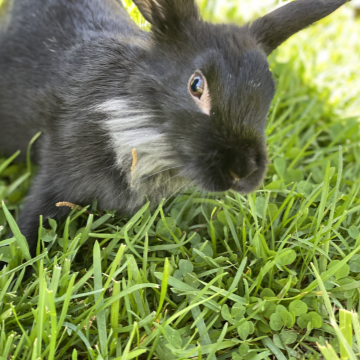

Fitz
Breed: Lionhead
Sex: Male
Age: 2 Years, 3 Months
Weight: 4 Pounds
Bio
Hi, I'm Fitz! I was born in rescue and my parents and siblings have all been adopted. But I get to stay with the
rescue people because I'm a little differently abled! I'm a very special bunny who has a couple legs that don't
work right and I get pretty dizzy and fall over a lot. I even had to have one of my eyes removed because I lay on
my side so much it kept getting infected and very painful. But I'm all healed from that, and super happy with my
bumpers to lean on, lots of great food, and my salads almost always have my favorite: fennel!
I'm just
hanging out doing my Fitzy thing. My foster people have to do a lot of care for me since I can't hop or use the
litterbox, but I keep myself quite clean and I'm in charge of my day! My medical expenses have been more than most
bunnies and I need food, hay, greens for the rest of my life, so donations to the rescue are always appreciated to
help with my care.
Want to Support Me?
To support me, or any of the sanctuary rabbits at the IHRS, please Donate to our GoFundMe if you are able.